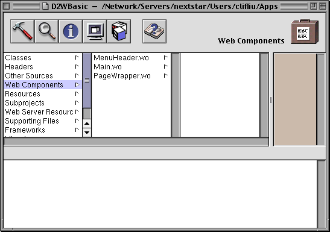
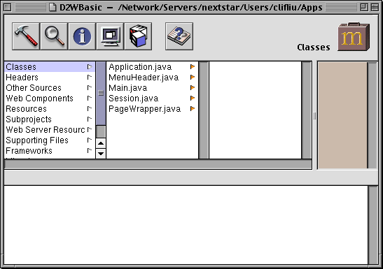

PATH
Documentation > WebObjects 4.5 >
Tools and Techniques
The Structure of a Direct to Web Project
A Direct to Web project has a structure similar to other WebObjects application projects. A newly created project contains three components:

-
MenuHeader.wo
is a reusable component that contains the header with the control buttons on the left side of each page (or the top of the page in the Basic look.) You can add text or other elements to this component if you choose.
-
Main.wo
is the main component, representing the login page of the application.
-
PageWrapper.wo
is a reusable component that wraps the content of the pages of the application (except for Main.wo
). It contains a header, the menu header component (MenuHeader.wo
), and footer text and elements common to these pages. If you want to customize the headers and footers for all pages of your application, you can add text or other elements to this component.
As you run your application, Direct to Web creates additional pages, using information in your model file and the settings specified in the Web Assistant. These pages do not show up as components in your project. Rather, Direct to Web creates them dynamically using a set of reusable components in the Direct to Web framework. However, you can save any page as a component or generate a user template. When you do that, you are then able to modify the component just as you would with any other WebObjects component. See
Generating Components
and
User Templates
for more information.
In your project's Classes suitcase, you'll see a Java file for each of the components, as well as the Session and Application objects. You can add code to any of these files to extend their functionality.

The Resources suitcase contains the model file you specified when you created the project (in this example, Movies.eomodeld
). It also contains user.d2wmodel
, which stores the preferences you have specified using the Web Assistant. Advanced users can edit this file; see Developing WebObjects Applications With Direct to Web
for more information about the rule file. The Resources suitcase also holds files specifying the exported keys, both optional and required, for each type of component used in the application; these files have an extension of .api
.
© 1999 Apple Computer, Inc. – (Last Updated July 27 99)